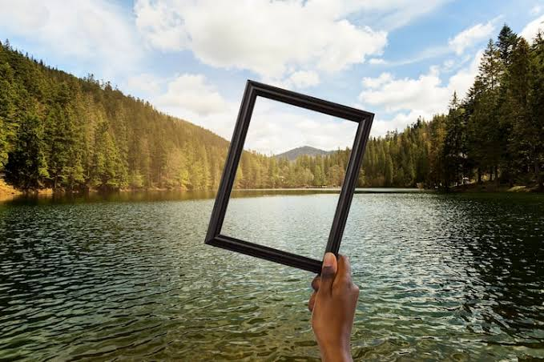
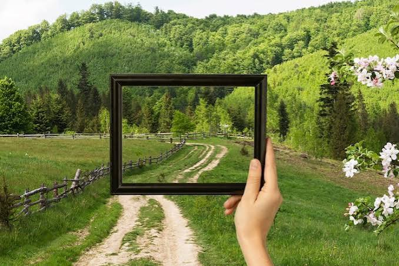

LITTLE MOMENTS, LOVELY MEMORIES
My photo gallery.
A collection of scenes, details, and moments I find beautiful. Replace the sample image paths below with your own photographs.
THROUGH MY LENS
Collected moments

✿Your photographAdd your image as images/photo1.jpg
A favourite momentA memory worth keeping

❋Your photographAdd your image as images/photo2.jpg
Little detailsBeauty in the everyday
✧Your photographAdd your image as images/photo3.jpg
Soft momentsA view through my eyes
❀Your photographAdd your image as images/photo4.jpg
Nature's paletteColours that inspire me
Tip: create an images folder beside these HTML files and add your photos using the filenames shown in each placeholder.